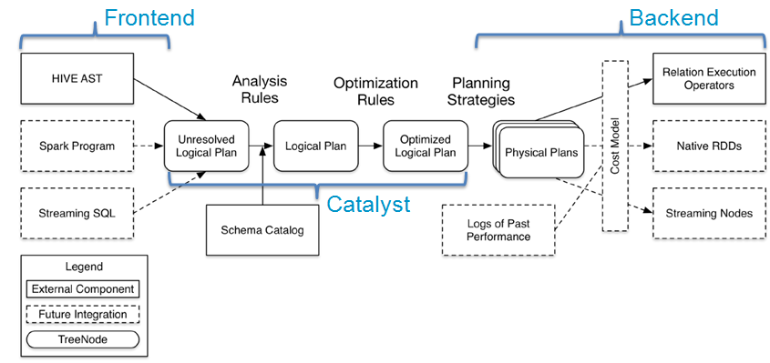

Catalyst优化器
在传统关系型数据库当中，一个简单的sql语句将会依次经过Parser生成Logical Pla，Optimizer生成Optimized Logical Plan，最后生成Physical Plan，交给执行器去执行。SparkSQL也采用了类似的方式进行处理，下面介绍一下SparkSQL的优化器：Catalyst。
先来看一下Catalyst在整个sql执行流程中所处的位置：

图中虚线部分是以后版本要实现的功能，实线部分是已经实现的功能。从上图看，整个SQL的执行框架主要的实现组件有：
- SqlParse：sql语句的语法解析功能
- Analyzer：将Unresolved Logical Plan和Schema Catalog进行绑定，生成Resolved Logical Plan
- Optimizer：对Resolved Logical Plan进行优化，生成Optimized Logical Plan
- Planner：将Logical Plan转换成Physical Plan
- CostModel：根据过去的性能统计数据，选择最佳的物理执行计划
Catalyst在整个流程中处于中段位置，它主要有两个任务
- 将Unresolved Logical Plan和Schema Catalog进行绑定，生成Resolved Logical Plan
- 对Resolved Logical Plan进行优化，生成Optimized Logical Plan
这两个任务正好说明了Catalyst名字的由来，即Catalog + Analyst。
（本文基于spark1.2.0)